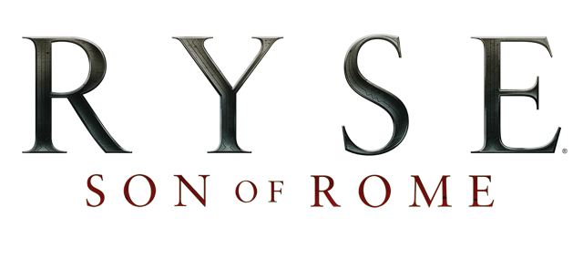

En este juego encarnamos a Marius Titus, un general romano, durante la época del emperador Nerón, una época bastante convulsa para el imperio romano. La historia comienza cuando Marius regresa a su casa en Roma tras alistarse en el ejercito. Tras una larga charla con su padre, antaño general romano, sobre su futuro y unas sesiones de entrenamiento un grupo de bárbaros ataca la ciudad matando a su madre, su hermana y finalmente también a su padre. A partir de este momento Marius, se une a la legión para comenzar su venganza y descubrir la verdad sobre la muerte de su padre por todo el imperio. Esta épica historia cuenta con la aparición de personajes históricos y elementos sobrenaturales con la intervención de los dioses.
Precio:63€